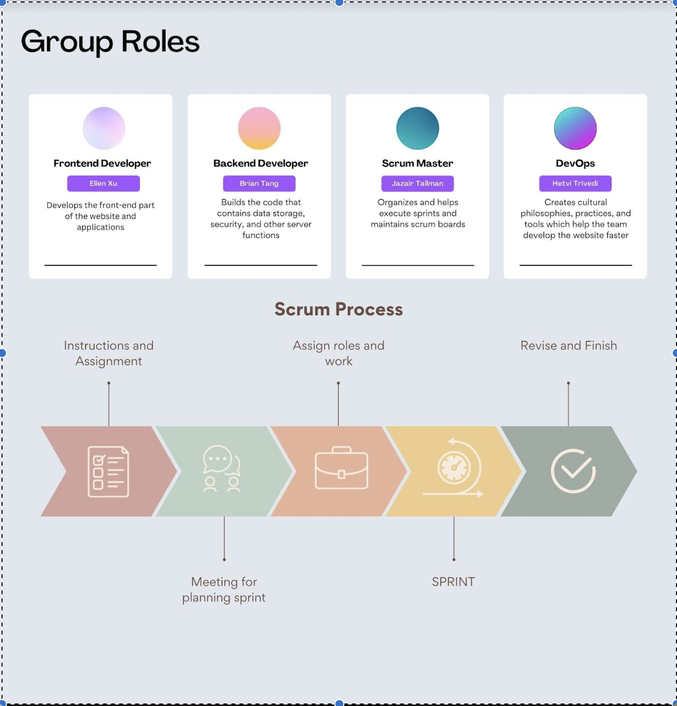

Welcome to our group's fast pages where we showcase the work we do together.

Jupyter Notebook containing my GUI project
Oct 9, 2022
Social computing tools
Oct 6, 2022
Task breakdown per member
Oct 2, 2022
Our group idea on our PBL Project
Sep 26, 2022
Our group presentation on methods
Sep 19, 2022
Our group presentation on Control Structures